| 日付 | 2022年12月30日（金） |
|---|---|
| 山域 | 奥多摩 |
| メンバー | 単独 |
| 山行形態 | 日帰り |
| アクセス | 車 |
| ルート (Map) | 日原鍾乳洞 (8:54) - (9:29) 八丁橋 - (10:30) 大日神社 - (11:59) 天祖山 (12:31) - (14:08) 八丁橋 - (14:43) 日原鍾乳洞 |
今年最後の山。
妻は足を痛めていて、子供たちは山に行きたくないと言うため、
一人で山登りに行くことにする。
季節が季節なので、大して登りたいと思える山はない。
年末で道路が大混雑しそうなので、遠出もできない。
トレーニング山行と割り切って、展望のない天祖山に行ってみることにする。
駐車場の詳細な位置が分からず、日原鍾乳洞の駐車場に車を停める。標高630m。
山と高原地図にはPマークがあるが、恐らく登山者が停めるのは禁止だろう。
本日は休業で周囲に人気はない。
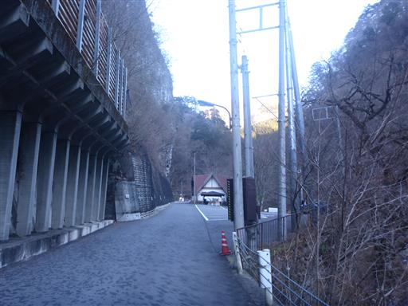
道端にあるお地蔵様。昭和59年と書かれていて、意外に新しい。
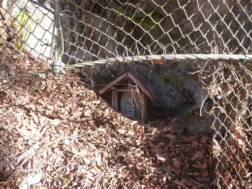
誰もいない沢沿いの車道を歩いていく。
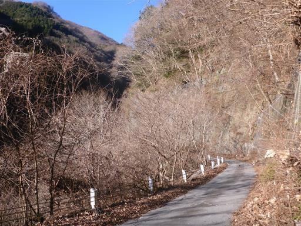
日影の橋の上は完全に凍りついている。
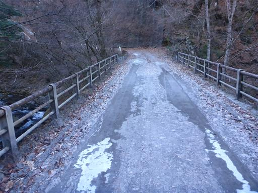
天祖山の登山口に到着。
ここまで車で入る人もいるが、途中の道が悪いのと、この辺りは駐車禁止と書かれている。
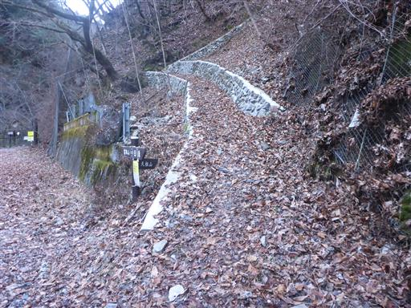
車道の少し先に滝が見える。
水量は多くないが、滝が凍り付いていて美しい。
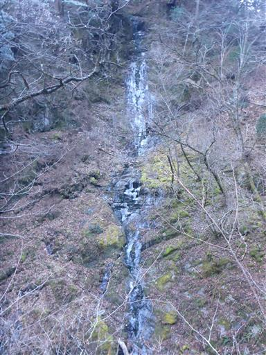
登山開始。つづら折りの道から始まる。
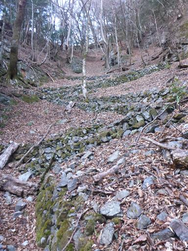
明確な尾根道になる。傾斜はそこそこ急だ。
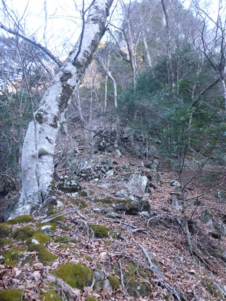
所々に現れる大きな岩。
近くに鍾乳洞があることから、この辺りの岩は石灰岩なのだろう。
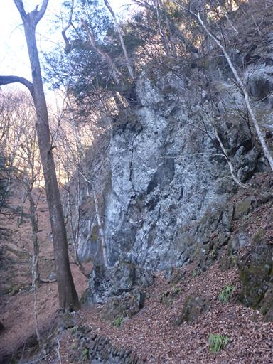
水がしみ出しているところは、つららができている。
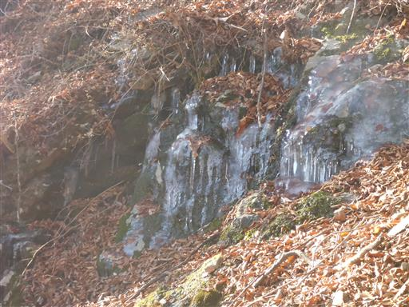
急斜面の道が続く。落ち葉が積もりに積もって、とにかくよく滑る。
急斜面と相まって、ものすごく登りにくい。
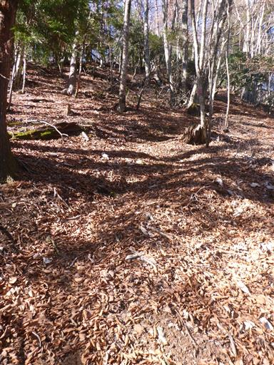
巨大な倒木が道を塞いでいる。
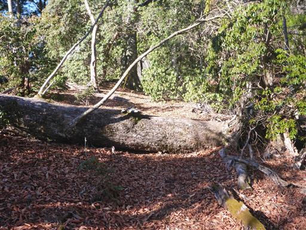
大日神社に到着。
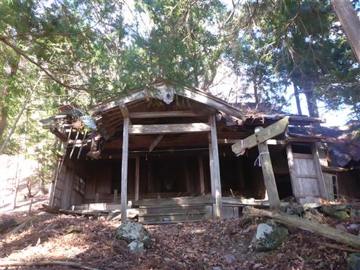
もう手入れする人がいないのか、神社は荒れ果てている。
ここまでの登りは結構しんどく、手入れも一筋縄ではいかなさそうだ。
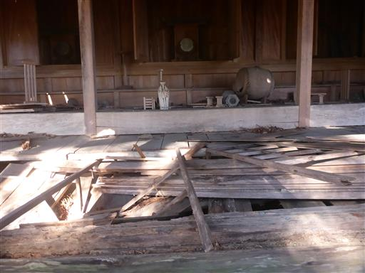
明るい尾根道。
傾斜は緩やかな部分と急な部分が交互に出てきて、
何度も偽ピークに騙されながら登って行く。
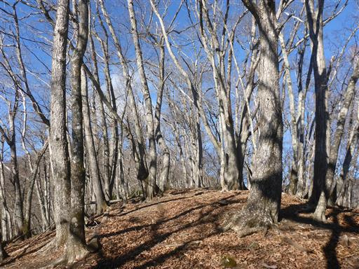
所々、岩がちな尾根道になる。
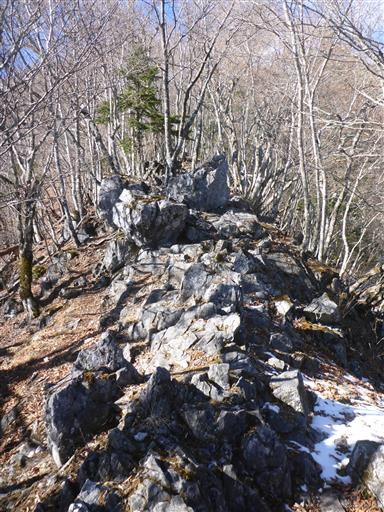
幹の真ん中に穴の開いた木。
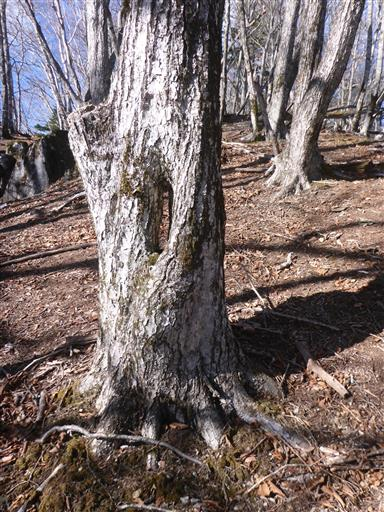
山頂近くになると登山道に雪が出てくる。
歩くのに支障が出るほどの雪ではない。
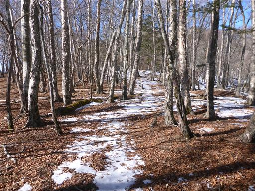
社務所が見えてきた。
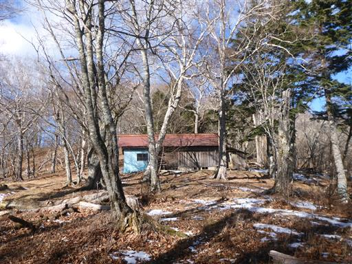
山頂直下の社務所に到着。
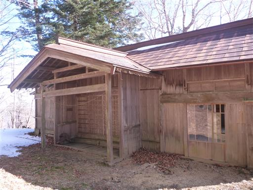
中を覗いてみる。まだ使われているのだろうか？
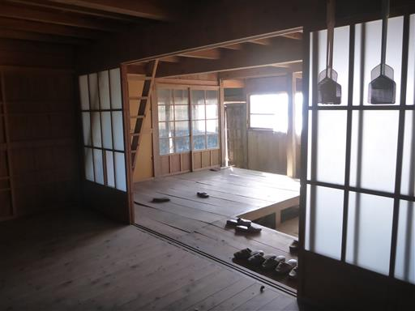
そこから一登りで天祖山の山頂に到着する。標高1723m。
山頂にある天祖神社は、きれいに整備されている。
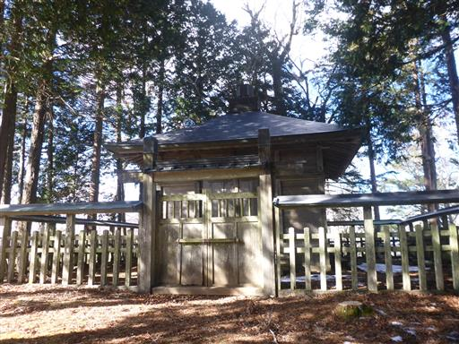
立派な山頂標識はなく、私製の小さな山頂標識を見かけたのみ。
たかだか1100mの登りだったのだが、久々の登山だったためか、かなり疲れてしまった。
タイムも思ったよりだいぶかかってしまった。
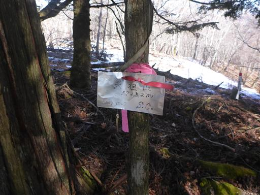
尾根道は落葉樹だったが山頂付近は針葉樹に覆われていて展望はない。
少し山頂から外れたところに腰を下ろして昼食をとる。
それでも冬枯れの時期で辛うじて展望がある程度だ。
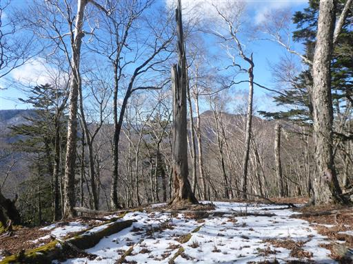
下山は元来た道を戻る。
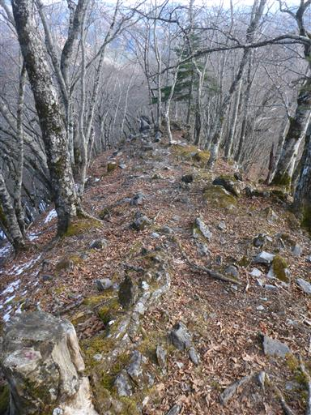
落ち葉が積もったトラバース道は歩きにくい。
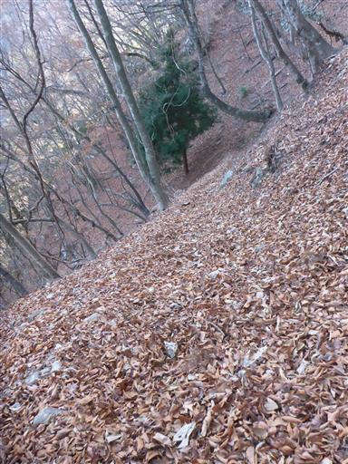
無事下山。あとは車道を歩くのみだ。
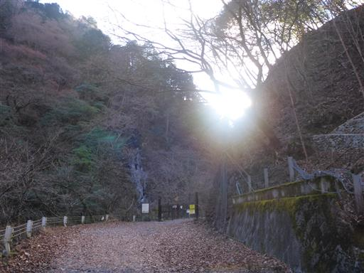
岩壁の中の穴を発見。あそこも鍾乳洞なのだろうか？それともただの小さな窪みだろうか？
今回の登山は、登りも下りも疲労度が高く、時間もかかってしまった。
来年はもう少し頻繁に山に登り、鍛えなおす必要がありそうだ。
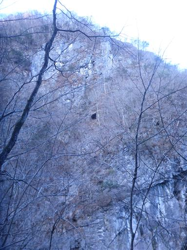